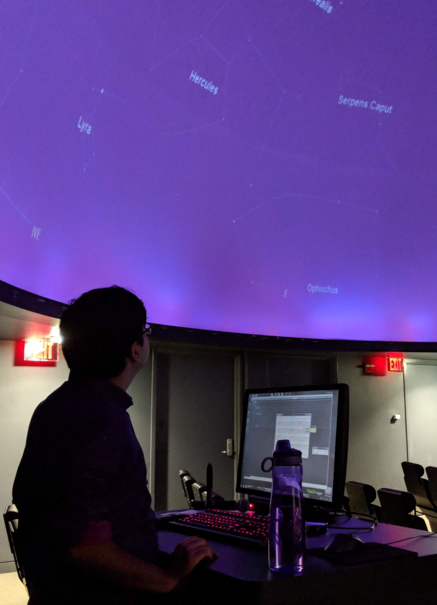
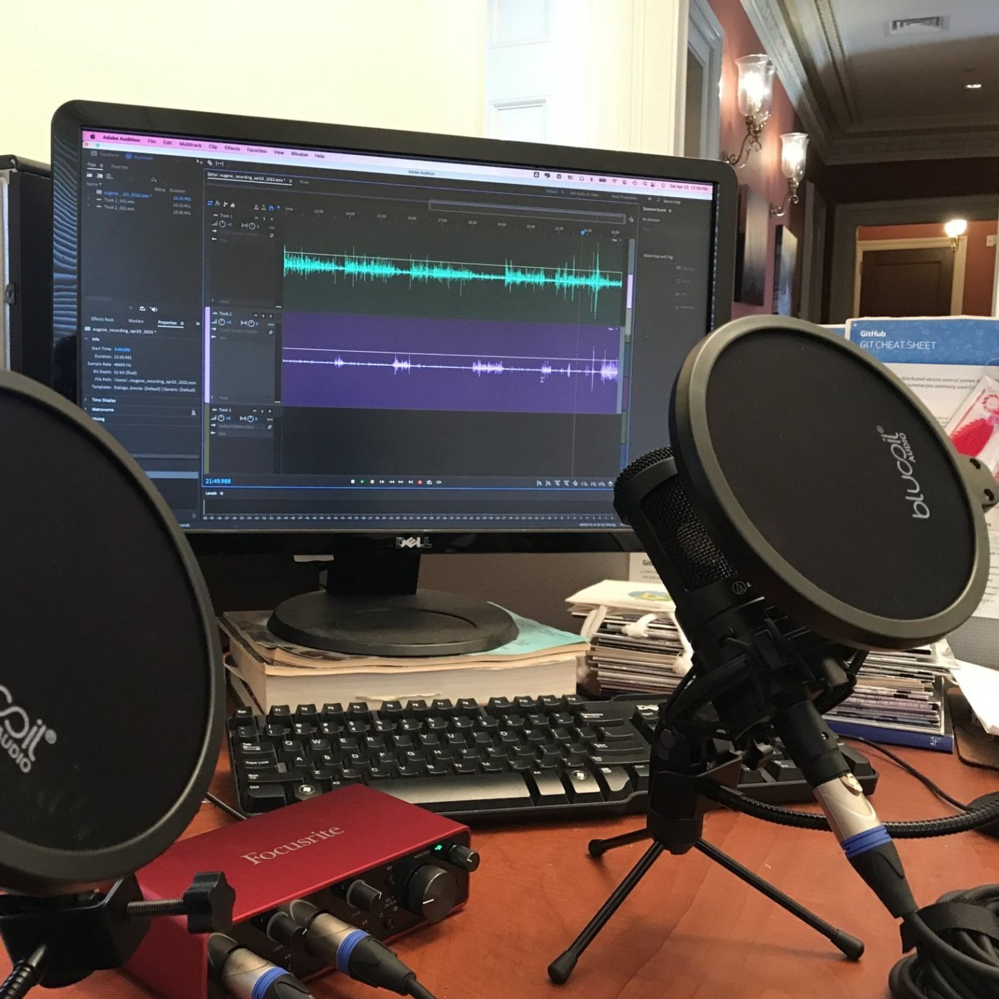
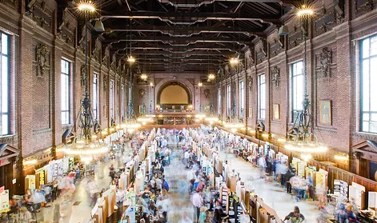

Since most of my research (and education) has been funded by public money, I have always considered it a duty to distill and communicate my research in a way that is accessible to a non-astronomer. Besides, I absolutely love doing outreach, and in fact, in my experience, the best astronomy questions are asked my $\sim 12$ year olds who visit the Yale Planetarium
 Yale Planetarium: Over the years, I have led hundreds of public nights, school visits and special events at the Yale Leitner Family Observatory & Planetarium. These typically involved leading half-an-hour shows in the planetarium, setting up telescopes for public observing, tours of the different telescopes in the building, interacting with our visitors, and answering a wide array of questions on physics and astronomy from them! Besides these regular shows, I have also delivered invited public lectures on my research at the planetarium. Watch an example here!
 Public Lectures: I have always greatly enjoyed delivering public lectures and regularly
do so in order to share my love and passion for astrophysics! Some of my most recent invited
public talks have been at the 2022 Yale-NASA-CME joint symposium, 2022
Yale Innovation Summit, Presidency University
Alumni Public Lecture Series. I am always looking for an opportunity to talk about astrophysics with members of the public. If you
have an event where you would want me to speak, please get in touch!
Public Lectures: I have always greatly enjoyed delivering public lectures and regularly
do so in order to share my love and passion for astrophysics! Some of my most recent invited
public talks have been at the 2022 Yale-NASA-CME joint symposium, 2022
Yale Innovation Summit, Presidency University
Alumni Public Lecture Series. I am always looking for an opportunity to talk about astrophysics with members of the public. If you
have an event where you would want me to speak, please get in touch!
Yale 3-Minute Thesis: I recently participated in and was one of the winners of Yale's 2022 3-Minute Thesis (3MT) competition. Yale' competition, modeled on the original format founded by the University of Queensland, challenges students to clearly and compellingly describe their thesis to a broad audience in just three minutes! Preparing for and participating in 3MT was a fantastic experience and I got to learn a lot! You can watch my 3MT presentation here! I also recently spoke to Susan Gonzalez and Jacob Gonzalez about the experience of participating in 3MT.
 Yale GSAS Podcast: I am one of the inaugural team members of the Yale Graduate School of Arts & Sciences (GSAS) Ph.D. podcast series. The series is designed around the basic question:- "What is a Ph.D.?". Through a series of interviews with about 30 Yale graduate students over 12 episodes, the series aims to shed light on the joys and struggles of being a Ph.D. student; and also hopes to communicate to the broader public the research being conducted by Yale graduate students! I was involved in selecting participants, designing and recording episodes, as well as doing audio editing. The picture on the right shows the pop-up recording station on my office desk! The episodes in this series will all be released at different points during the 2022-23 academic year.
 New Haven Science Fair: Since 2020, I have been a lead judge in the New Haven Science Fair, typically for grades 5-12. The science fair is a partnership between many stakeholders in the local New Haven community and usually sees $\sim 8000$ New Haven students from 43 schools participating in different categories. The goal of the program is to work with children and teachers from PreK through grade 12 to help them carry out investigative hands-on science fair projects in order to promote skills in critical thinking, scientific process, and communication.